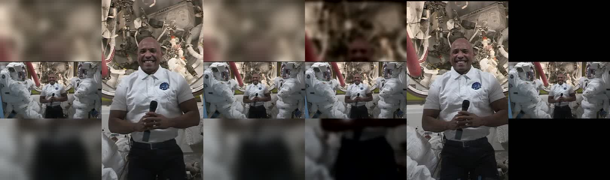

Brutal Test Kit: kajisho5/ffmpeg-skill, with vs without
LEGIT* v4.8.2 (commit 5730714), Claude Sonnet 5.5, Windows laptop, local FFmpeg. Tested 26 Nov 2026.
The test
The README's own request, word for word: Take interview.mp4, keep 0:45–1:20 and 5:00–5:25, and make it a 60-second Reel. 3 runs with the skill (listed like an installed Claude Code skill) and 3 without, alternating. Footage: NASA public-domain in-flight interview (ISS, 4 Feb 2021), first 6:40.
- run_fx_test.ps1 + fx_harness.py: the exact setup (3 tools: run PowerShell, read file/image, write file; 60-step / 300K-token cap per run).
- agent_logs.tgz: every step of all 6 runs. measure.py → measure.json: my measurements (ffprobe, EBU R128, an audio fingerprint of every output second back to the source).
Results
| Run | Length / size | Clips | Loudness | Peak | Framing | Tokens | Time |
|---|---|---|---|---|---|---|---|
| plain 1 | 60.00 s · 1080x1920 | ✓ | −20.5 | +0.3 | blur fill | 12.9K | 103 s |
| plain 2 | 60.00 s · 1080x1920 | ✓ | −20.5 | +0.3 | centre crop | 57.7K | 227 s |
| plain 3 | 60.00 s · 1080x1920 | ✓ | −20.5 | +0.7 | blur fill | 13.0K | 106 s |
| skill 1 | 60.01 s · 1080x1920 | ✓ | −14.2 | −0.9 | blur fill | 145.0K | 520 s |
| skill 2 | 60.01 s · 1080x1920 | ✓ | −14.0 | −1.0 | centre crop | 90.1K | 546 s |
| skill 3 | 60.01 s · 1080x1920 | ✓ | −14.0 | −1.0 | black bars | 82.0K | 423 s |

Verdict
LEGIT* It works as described and fixed the one thing plain Claude skipped: Reels loudness (−14 LUFS / −1 dB peak, 3 of 3). Catches: plain Claude already cut the Reel right 3 of 3; the skill runs used ~3.8× the tokens and ~3.4× the time; framing is still the agent's call (one skill run shipped black bars). Full write-up: RESULTS.md.
brutal guy.ai · Hype Guy believes every README. Brutal Guy says "Run it."